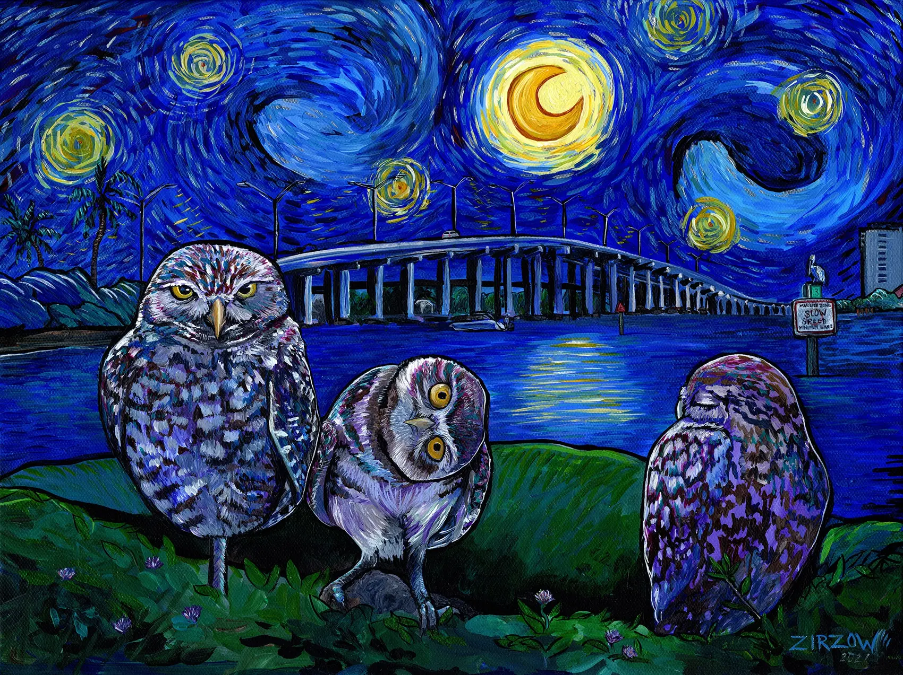

Look closer
Observe wildlife respectfully, give animals space and share what you discover.
Wild Florida
From curious birds to unexpected encounters, nature offers a reason to look closer every day.
Watch wildlife
Observe wildlife respectfully, give animals space and share what you discover.
Watching, sharing and exploring are always free. If you would like to help with my independent projects, a personal gift is optional and appreciated.
Explore my science wish listOther ways to supportField notes & photography
Follow my outdoor discoveries in The Curious Life journal and explore the photography collections as they become available.
Read the field journalExplore photography & prints